Plotting with ospsuite.plots
Source:vignettes/plotting-with-ospsuite-plots.Rmd
plotting-with-ospsuite-plots.RmdIntroduction
The ospsuite package provides a set of plotting
functions based on the ospsuite.plots library. These
functions are designed to work seamlessly with DataCombined
objects and provide advanced visualization capabilities for
pharmacometric data analysis.
This vignette describes the exported plotting functions from the
plot-with-ospsuite-plots.R file:
-
plotTimeProfile()- Creates time profile plots -
plotPredictedVsObserved()- Creates predicted vs observed scatter plots -
plotResidualsVsCovariate()- Creates residual plots against time, observed, or predicted values -
plotResidualsAsHistogram()- Creates histogram plots of residuals -
plotQuantileQuantilePlot()- Creates Q-Q plots for assessing residual distribution
All these functions return ggplot2 objects that can be
further customized and saved.
For more information on the underlying library: - ospsuite.plots: GitHub repository
Initial Setup
Before creating plots with ospsuite.plots, it’s
important to initialize the plotting environment properly. This involves
two key steps:
-
Set default plotting options using
ospsuite.plots::setDefaults() -
Configure the watermark option using
options(ospsuite.plots.watermarkEnabled = TRUE)oroptions(ospsuite.plots.watermarkEnabled = FALSE)
library(ospsuite)
# Set default plotting options for ospsuite.plots
# Note: ospsuite.plots is imported by ospsuite, so we use :: for clarity
ospsuite.plots::setDefaults()
# Enable watermark for plots (optional)
options(ospsuite.plots.watermarkEnabled = TRUE)The setDefaults() function initializes various plotting
defaults that ensure consistent appearance across all plots. The
watermark option allows you to add a watermark to your plots.
Refer to the ospsuite.plots package documentation for
details.
Setting up the data
Next, let’s create DataCombined objects that we will use
throughout this vignette:
# Load simulation
simFilePath <- system.file("extdata", "Aciclovir.pkml", package = "ospsuite")
sim <- loadSimulation(simFilePath)
# simulate with two outputs
addOutputs(
quantitiesOrPaths = "Organism|Kidney|Urine|Aciclovir|Fraction excreted to urine",
simulation = sim
)
simResults <- runSimulations(sim)[[1]]
# Load observed data
obsData <- loadDataSetFromPKML(system.file(
"extdata",
"ObsDataAciclovir_1.pkml",
package = "ospsuite"
))
# Create DataCombined object
myDataCombined <- DataCombined$new()
myDataCombined$addSimulationResults(
simulationResults = simResults,
quantitiesOrPaths = "Organism|PeripheralVenousBlood|Aciclovir|Plasma (Peripheral Venous Blood)",
names = list(
"Organism|PeripheralVenousBlood|Aciclovir|Plasma (Peripheral Venous Blood)" = "Plasma"
),
groups = "Aciclovir PVB"
)
myDataCombined$addDataSets(
obsData,
groups = "Aciclovir PVB"
)
# Create DataCombined object with more than one simulation result and observed data set
myDataCombinedMulti <- DataCombined$new()
myDataCombinedMulti$addSimulationResults(
simulationResults = simResults,
quantitiesOrPaths = c(
"Organism|PeripheralVenousBlood|Aciclovir|Plasma (Peripheral Venous Blood)",
"Organism|Kidney|Urine|Aciclovir|Fraction excreted to urine"
),
names = list(
"Organism|PeripheralVenousBlood|Aciclovir|Plasma (Peripheral Venous Blood)" = "Plasma (Peripheral Venous Blood) ",
"Organism|Kidney|Urine|Aciclovir|Fraction excreted to urine" = "fraction excreted"
),
groups = "Aciclovir"
)
myDataCombinedMulti$addDataSets(
obsData,
groups = "Aciclovir"
)
obsDataUrine <- DataSet$new(name = 'urine data')
obsDataUrine$yDimension <- "Fraction"
obsDataUrine$yUnit <- ""
obsDataUrine$setValues(
xValues = c(3, 12, 24),
yValues = c(0.5, 0.9, 0.98),
yErrorValues = NULL
)
myDataCombinedMulti$addDataSets(
obsDataUrine,
groups = "Aciclovir"
)Population Simulation Data
For demonstrating population-specific features, let’s also create a
DataCombined object with population simulation results:
# Load population from CSV file
popFilePath <- system.file("extdata", "pop.csv", package = "ospsuite")
population <- loadPopulation(csvPopulationFile = popFilePath)
# Run population simulation
popResults <- runSimulations(simulations = sim, population = population)[[1]]
# Create DataCombined object for population
myPopDataCombined <- DataCombined$new()
myPopDataCombined$addSimulationResults(
simulationResults = popResults,
quantitiesOrPaths = "Organism|PeripheralVenousBlood|Aciclovir|Plasma (Peripheral Venous Blood)",
names = list(
"Organism|PeripheralVenousBlood|Aciclovir|Plasma (Peripheral Venous Blood)" = "Plasma"
),
groups = "Aciclovir Population"
)
myPopDataCombined$addDataSets(
obsData,
groups = "Aciclovir Population"
)Time Profile Plots
The plotTimeProfile() function creates time profile
plots showing observed and simulated data over time. This is one of the
most common visualizations in pharmacometric analysis.
plotTimeProfile(myDataCombined)
Population Data Aggregation
When working with population simulations, you can control how the
data is aggregated using the aggregation parameter. Options
include:
-
"quantiles"(default) - Shows median and specified quantiles -
"arithmetic"- Shows arithmetic mean with standard deviations -
"geometric"- Shows geometric mean with standard deviations
Here’s an example using the population simulation data:
# Plot population data with default quantile aggregation
plotTimeProfile(myPopDataCombined, yScale = 'log')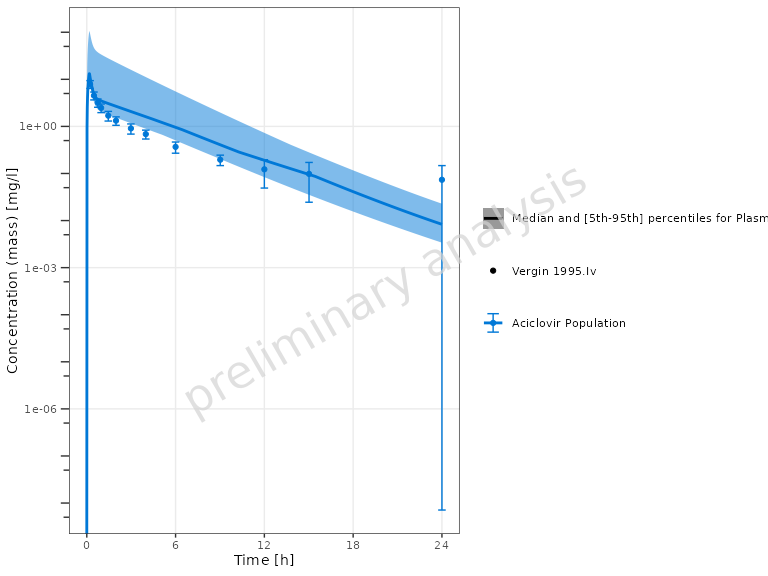
You can customize the quantiles:
plotTimeProfile(
myPopDataCombined,
yScale = 'log',
aggregation = "quantiles",
quantiles = c(0.1, 0.5, 0.9)
)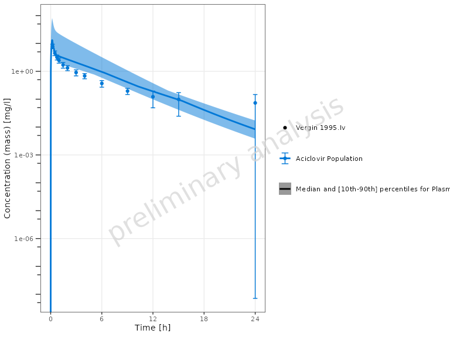
Alternatively, you can use arithmetic mean aggregation with standard deviation bands:
plotTimeProfile(
myPopDataCombined,
yScale = 'log',
aggregation = "arithmetic",
nsd = 1
)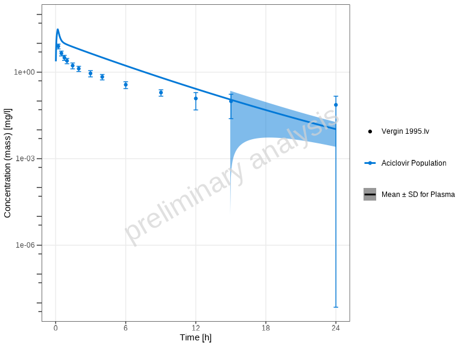
Showing Individual Dataset Names
By default, showLegendPerDataset = "all", which
differentiates both observed (via shape) and simulated (via
linetype) datasets in the legend.
You can customize this behavior using the
showLegendPerDataset parameter:
# Show all individual dataset names (both observed and simulated) - default
plotTimeProfile(myDataCombinedMulti, showLegendPerDataset = "all")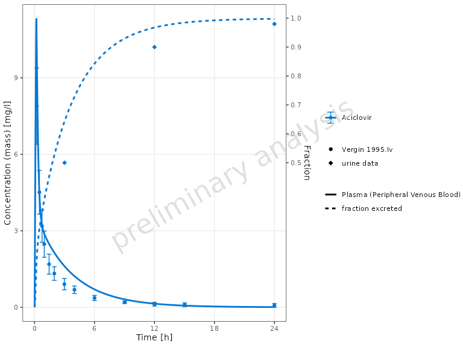
# No per-dataset differentiation
plotTimeProfile(myDataCombinedMulti, showLegendPerDataset = "none")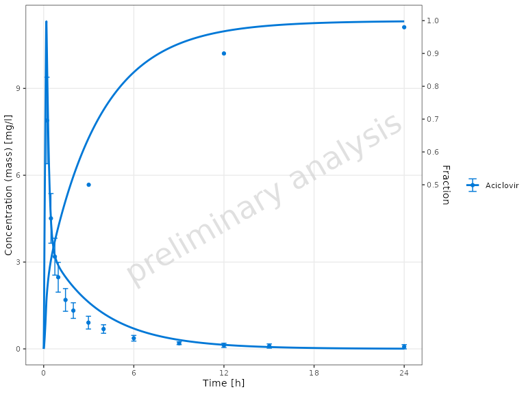
# Show only observed dataset names (different shapes)
plotTimeProfile(myDataCombinedMulti, showLegendPerDataset = "observed")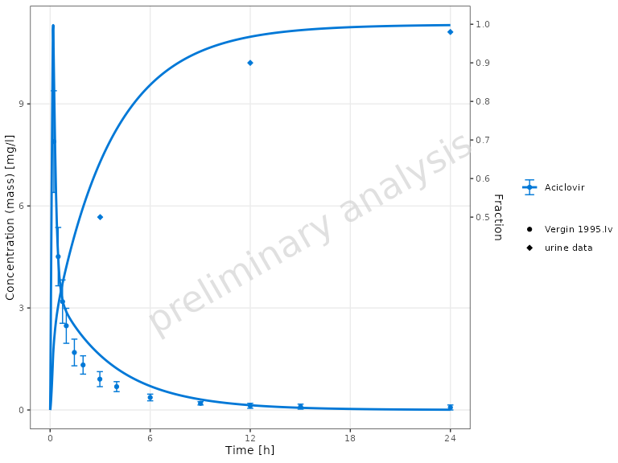
# Show only simulated dataset names (different line types)
plotTimeProfile(myDataCombinedMulti, showLegendPerDataset = "simulated")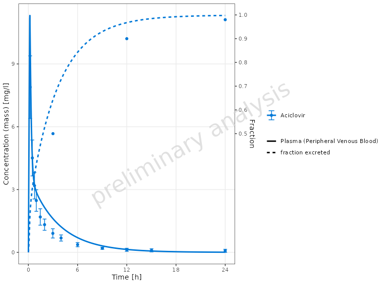
Custom Aesthetic Mappings
For manual control over aesthetics, use the mapping and
observedMapping parameters.
Important: The aesthetic used for differentiation
depends on data type: - Observed data (points): Uses
different shapes (shape = name) -
Simulated data (lines): Uses different line
types (linetype = name)
- The default of
observedMappingis a copy of mapping.
To get the same plots as above you have to set the aesthetics as following:
# Show all individual dataset names (both observed and simulated)
plotTimeProfile(
myDataCombinedMulti,
mapping = ggplot2::aes(linetype = name),
observedMapping = ggplot2::aes(shape = name)
)
# Show only observed dataset names (different shapes)
plotTimeProfile(
myDataCombinedMulti,
observedMapping = ggplot2::aes(shape = name)
)
# Show only simulated dataset names (different line types)
plotTimeProfile(
myDataCombinedMulti,
mapping = ggplot2::aes(linetype = name),
observedMapping = ggplot2::aes()
)You can further customize the plot appearance using
ggplot2 aesthetic mappings and all columns available in
myDataCombinedMulti$toDataFrame().
# Customize aesthetics
plotTimeProfile(
myDataCombinedMulti,
mapping = ggplot2::aes(color = yDimension, fill = yDimension)
)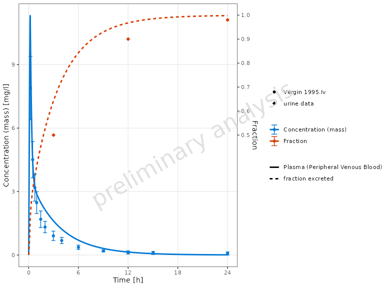
Predicted vs Observed Plots
Beyond time profiles, you can assess model performance using
goodness-of-fit plots. The plotPredictedVsObserved()
function creates scatter plots comparing predicted (simulated) values to
observed values. This helps assess model performance and identify
systematic biases.
plotPredictedVsObserved(myDataCombined)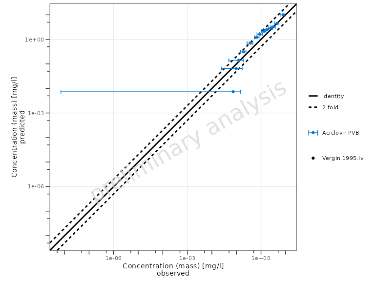
By default, the plot shows: - Identity line (perfect agreement) - Fold-distance lines (default: 2-fold range)
Customizing Fold Distance
You can customize the fold-distance lines using the
comparisonLineVector parameter:
# Show 1.5-fold and 3-fold ranges
plotPredictedVsObserved(
myDataCombined,
comparisonLineVector = ospsuite.plots::getFoldDistanceList(folds = c(1.5, 3))
)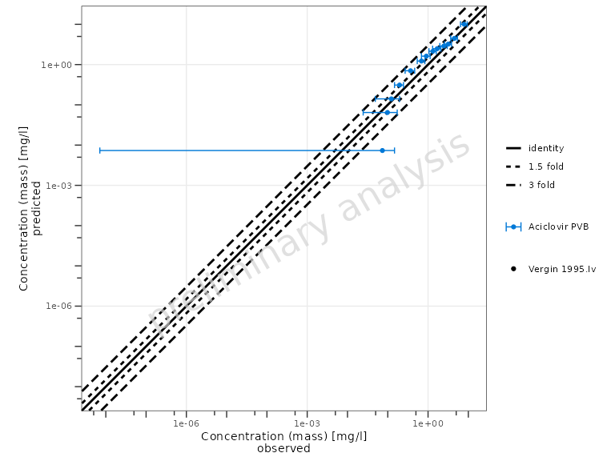
Swapping Axes
By default, predicted values are on the y-axis and observed on the
x-axis. You can swap these using the predictedAxis
parameter:
# Put predicted on x-axis, observed on y-axis
plotPredictedVsObserved(myDataCombined, predictedAxis = "x")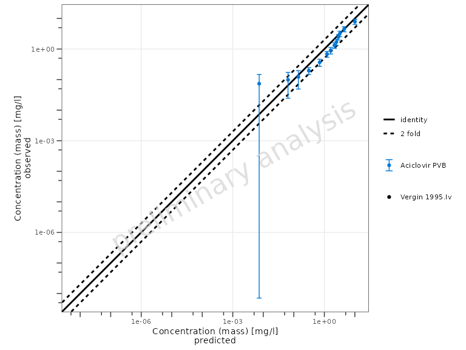
Scaling Options
The xyScale parameter controls the axis scaling:
# Use linear scale instead of log
plotPredictedVsObserved(myDataCombined, xyScale = "linear")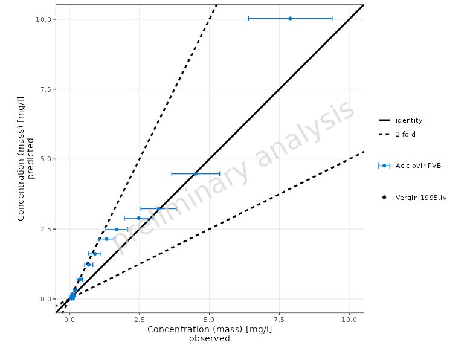
Showing Individual Dataset Names
Similar to plotTimeProfile(), you can display individual
dataset names in the legend using the showLegendPerDataset
parameter:
# Show individual observed dataset names (different shapes) (default)
plotPredictedVsObserved(myDataCombined, showLegendPerDataset = "all")
# No per-dataset differentiation
plotPredictedVsObserved(myDataCombined, showLegendPerDataset = "none")Residuals vs Covariate Plots
The plotResidualsVsCovariate() function creates residual
plots to assess systematic bias in the model. You can plot residuals
against time, observed values, or predicted values.
Residuals vs Observed Values
plotResidualsVsCovariate(myDataCombined, xAxis = "observed")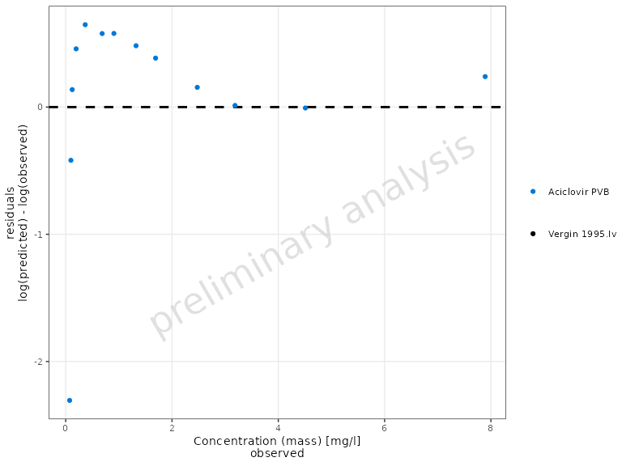

Residuals vs Predicted Values
plotResidualsVsCovariate(myDataCombined, xAxis = "predicted")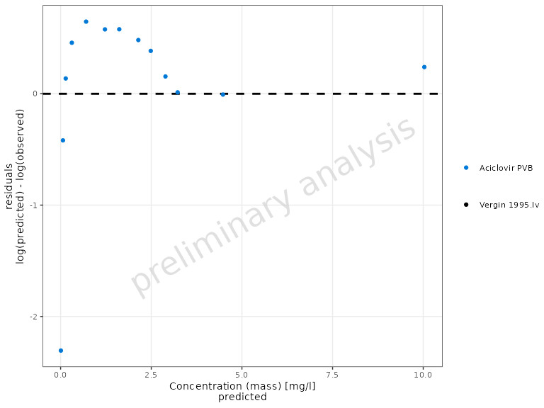
Residual Scale Options
The residualScale parameter controls how residuals are
calculated and displayed (this same parameter is used in
plotResidualsAsHistogram and
plotQuantileQuantilePlot):
-
"log"(default) - Logarithmic residuals:log(observed/predicted) -
"linear"- Linear residuals:observed - predicted -
"ratio"- Ratio:observed/predicted
# Use linear residuals
plotResidualsVsCovariate(
myDataCombined,
xAxis = "observed",
residualScale = "linear"
)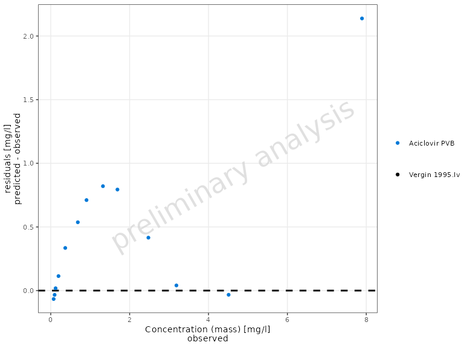
Showing Individual Dataset Names
You can display individual dataset names in the legend using the
showLegendPerDataset parameter:
# Show individual observed dataset names (different shapes) (default)
plotResidualsVsCovariate(myDataCombined, showLegendPerDataset = "all")
# No per-dataset differentiation
plotResidualsVsCovariate(myDataCombined, showLegendPerDataset = "none")Residuals as Histogram
The plotResidualsAsHistogram() function creates a
histogram of residuals, which helps assess the distribution of
errors.
plotResidualsAsHistogram(myDataCombined)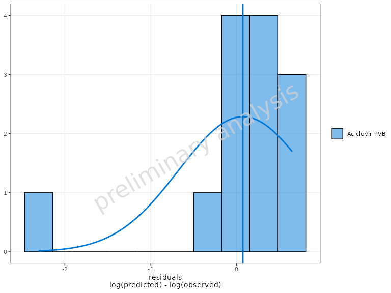
By default, a normal distribution overlay is added to help assess
normality. You can control this using the distribution
parameter:
# Without distribution overlay
plotResidualsAsHistogram(myDataCombined, distribution = 'none')The residualScale parameter works the same as in
plotResidualsVsCovariate():
# Linear residuals histogram
plotResidualsAsHistogram(myDataCombined, residualScale = "linear")Quantile-Quantile (Q-Q) Plot
The plotQuantileQuantilePlot() function creates a Q-Q
plot to assess whether residuals follow a normal distribution.
plotQuantileQuantilePlot(myDataCombined)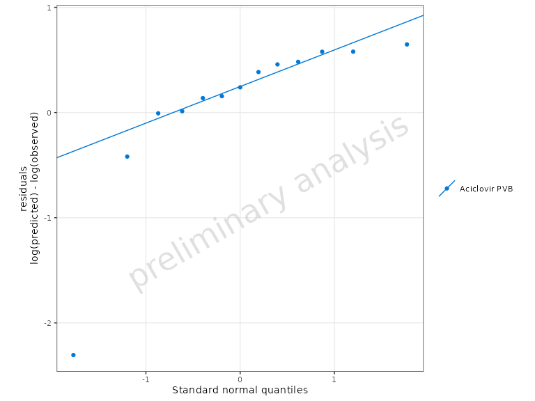
Points falling along the diagonal line indicate that the residuals follow a normal distribution. Deviations suggest non-normality.
# Use linear residuals
plotQuantileQuantilePlot(myDataCombined, residualScale = "linear")Automatic Unit Conversion
A key feature of these plotting functions is automatic unit
conversion. For manual unit conversion of DataCombined
objects outside of plotting, you can use the convertUnits()
function. When using a DataCombined object with mixed units
in plotting functions:
- The target unit is automatically determined by the most frequently occurring unit in the observed data
- If no observed data exists, the most common unit in simulated data is used
- Concentration dimensions (
Concentration (mass)andConcentration (molar)) are treated as compatible - Conversion between mass and molar concentrations is possible if molecular weight is available
This ensures that all data is displayed in consistent units without manual conversion.
Specifying Units Directly
All plotting functions in this family accept xUnit and
yUnit arguments. Here, xUnit and
yUnit refer to the unit field names in the underlying
DataCombined data frame (xUnit for the
x-values column, yUnit for the y-values column), which do
not necessarily correspond to the physical x- or y-axis of the resulting
plot. For example, in plotPredictedVsObserved(),
yUnit controls the unit for both axes since both predicted
and observed are taken from the y-values of the data.
plotTimeProfile() additionally accepts
y2Unit for controlling the secondary y-axis unit when data
contains two distinct y-dimensions (i.e., when a secondary y-axis is
used for a different measurement type such as Fraction
alongside Concentration). The function
plotResidualsVsCovariate() supports xUnit and
yUnit, all other functions
(plotPredictedVsObserved(),
plotResidualsAsHistogram(),
plotQuantileQuantilePlot()) support yUnit
only.
# Default: auto-detected units (e.g. µmol/l and h from the data)
plotTimeProfile(myDataCombined)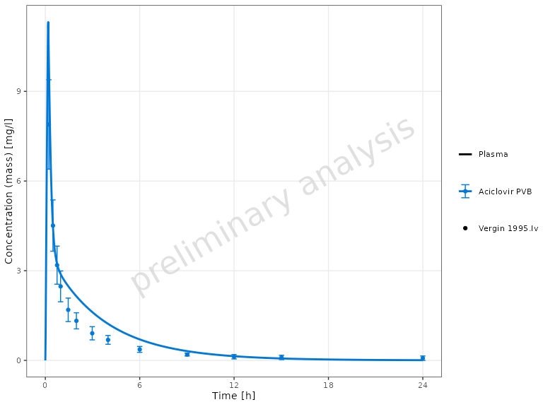
# Override x-axis unit: display time in minutes instead of hours
plotTimeProfile(myDataCombined, xUnit = "min", yUnit = "mg/l")Passing units directly is equivalent to pre-converting the data with
convertUnits():
plotTimeProfile(convertUnits(myDataCombined, xUnit = "min", yUnit = "mg/l"))Handling Mixed Error Types
These functions automatically handle datasets with different error type specifications:
- If all data uses the same error type (
ArithmeticStdDevorGeometricStdDev), it is used directly - If data contains mixed error types, they are
automatically converted to
yMin/yMaxbounds:-
ArithmeticStdDev:yMin = yValues - yErrorValues,yMax = yValues + yErrorValues -
GeometricStdDev:yMin = yValues / yErrorValues,yMax = yValues * yErrorValues
-
Using data.table Instead of DataCombined
While these functions are designed to work with
DataCombined objects, you can also provide a
data.table directly. Use toDataFrame() to
convert a DataCombined object to a data frame if needed.
The table must include the following columns:
-
xValues: Numeric time points or x-axis values -
yValues: Observed or simulated values (numeric) -
group: Grouping variable (factor or character) -
name: Name for the dataset (factor or character) -
xUnit: Unit of the x-axis values (character) -
yUnit: Unit of the y-axis values (character) -
dataType: Specifies data type—either"observed"or"simulated"
Optional columns: - yErrorType: Type of y error (see
ospsuite::DataErrorType) - yErrorValues:
Numeric error values - yMin, yMax: Custom
ranges for y-axis - IndividualId: Used for aggregation of
simulated population data - predicted: Predicted values
(required for residual plots)
Further Customization
All plotting functions accept additional arguments that are passed to
the underlying ospsuite.plots functions. This allows for
extensive customization. Refer to the ospsuite.plots
package documentation for details.
Additionally, since all functions return ggplot2
objects, you can further modify them using standard ggplot2
functions:
library(ggplot2)
# Create a plot and customize it
p <- plotTimeProfile(myDataCombined)
# Add customizations
p <- p +
theme_minimal() +
labs(title = "My Custom Title") +
theme(legend.position = "bottom")
print(p)Saving Plots
Since all functions return ggplot2 objects, you can save
them using ospsuite.plots::exportPlot():
# Create a plot
myPlot <- plotTimeProfile(myDataCombined)
# Save to file using ospsuite.plots::exportPlot
ospsuite.plots::exportPlot(
plotObject = myPlot,
filePath = "timeprofile.png",
width = 8,
height = NULL,
dpi = 300
)This function is a wrapper around ggsave() that
automatically adjusts the plot height based on content when
height = NULL.
Alternatively, you can use directly the standard
ggsave() function from ggplot2:
# Save using ggsave
ggsave("timeprofile.png", myPlot, width = 8, height = 6, dpi = 300)